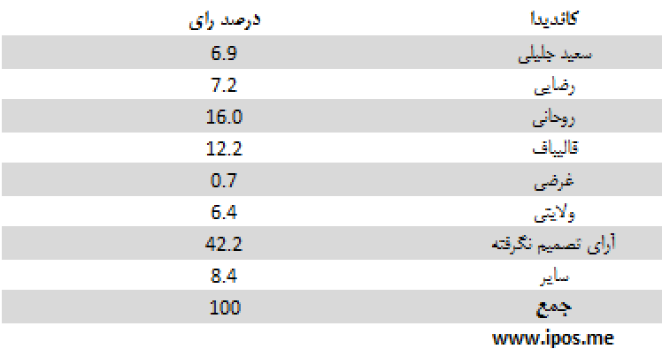
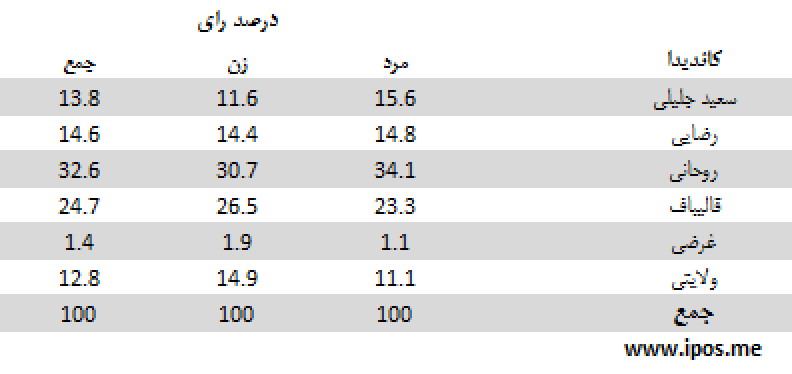

مهمترین یافتهها:
- مهمترین یافتههای آخرین نظرسنجی iPOS ، نشان میدهد که انتخابات هنوز دو مرحلهای است. هیچیک از نامزدها در حال حاضر نیمی از آرای کسانی را که میگویند در انتخابات شرکت میکنند و به یکی از 6 نامزد موجود تمایل دارند، به دست نیاوردهاند.
- گرچه آرای کسانی که هنوز تصمیم نگرفتهاند به چه کسی رای دهند به حدود 42 درصد رسیده است، این عده در صورت تصمیمگیری و حضور در انتخابات با الگویی متفاوت از رایدهندگان حاضر در این نظرسنجی، میتوانند تمام پیشبینیها را تغییر دهند، از جمله میتوانند آن را از یک انتخابات دو مرحلهای به انتخاباتی یک مرحلهای تبدیل کنند.
- اولین اثر کاهش یک هفتهای نسبت کسانی که پیشتر تصمیم به رای مشخصی نداشتند، تغییر نسبت آرای نامزدهاست که از سه روز پیش شروع شده است، تغییری که در صورت ادامهی روندش تا روز انتخابات، باید شاهد تحولات بیشتری بود.
- بخشی دیگر از تغییر نسبت آرای نامزدها، ناشی از انصراف دو نامزد از میان نامزدهای موجود و تغییر نسبت آرای سایر نامزدها از کل آراست. (این تغییر، تغییری آماری است و لزوماً به انتقال رای نامزدهای انصراف داده به نامزدهای موجود مربوط نمیشود.)
- مهمترین تغییر در آرای نامزدها، ادمهی صعود آرای آقای روحانی و صدر نشینی ایشان در جدول نامزهاست. در حال حاضر میان کسانی که میگویند در انتخابات شرکت میکنند و به یکی از 6 نامزد موجود تمایل دارند، آقای روحانی 32.4 درصد آرا را در اختیار دارند.
- در میان نامزدهای اصولگرا یا نزدیک به اصولگرایان، آقای قالیباف هنوز با بیشترین رای، 24.6 درصد، پشت سر آقای روحانی قرار دارد.
- به طور کلی، از میان تمامی پاسخگویانی که میگویند در انتخابات شرکت میکنند، گذشته از 42 درصدی که تصمیم مشخصی اتخاد نکردهاند و حدود 9 درصدی که به افراد دیگری تمایل داشته یا از اعلام نظر خود خودداری کردهاند، آقای روحانی با در اختیار داشتن 15.8 درصد آرا (در میان 8 نامزد اولیه) و 16 درصد (در میان 6 نامزد موجود) در صدر قرار دارند. پس از ایشان آقایان قالیباف، رضایی و جلیلی به ترتیب با 12، 7.1 و 6.8 درصد (در میان 8 نامزد اولیه) و 12.2، 7.2 و 6.9 درصد (در میان 6 نامزد موجود) در ردههای دوم تا چهارم قرار میگیرند. پس از اینان، آقایان ولایتی وغرضی قرار دارند.
- اگر از میان پاسخگویانی که میگویند در انتخابات شرکت میکنند فقط کسانی در نظر گرفته شوند که تاکنون تصمیم گیری کرده و از میان 8 یا 6 نامزد موجود یک نفر را انتخاب کرده اند، آقای روحانی با در اختیار داشتن 31.7 درصد آرا (در میان 8 نامزد اولیه) و 32.4 درصد (در میان 6 نامزد موجود) در صدر قرار دارند. پس از ایشان آقای قالیباف، 7با 24.1 درصد آرا (در میان 8 نامزد اولیه) و 24.6 درصد (در میان 6 نامزد موجود) در ردهی بعد قرار میگیرند. آقایان رضایی و جلیلی به ترتیب با 14.3 و 13.7 درصد (در میان 8 نامزد اولیه) و 14.6 و 14 درصد (در میان 6 نامزد موجود) در ردههای سوم و چهارم قرار میگیرند. پس از اینان، آقایان ولایتی وغرضی قرار دارند.
سئوال: اگر قرار بود همین امروز در انتخابات ریاست جمهوری شرکت کنید به کدام یک از کاندیداها رای میدادید؟

این جدول نشان میدهد پاسخدهندگانی که میگویند در انتخابات شرکت میکنند، از نظر تصمیمگیری برای رای دادن در چه و ضعیتهایی قرار دارند.
سئوال: اگر قرار بود همین امروز در انتخابات ریاست جمهوری شرکت کنید به کدام یک از کاندیداها رای میدادید؟

این جدول نشان میدهد از میان پاسخدهندگانی که میگویند در انتخابات شرکت میکنند، و از میان 8 نامزد موجود یک نفر را انتخاب کردهاند، هریک از نامزدها چه میزان رای دارند.
جدول زیر میزان اقبال به نامزدها را بر اساس جنسیت (زن و مرد) نشان میدهد:

در جدول زیر میزان آرای نامزدها در میان دو گروه سنی (کمتر از 40 سال و بیشتر از 40 سال) مقایسه شده است:

انتخاب رای دهندگان در جدول زیر بر اساس سطح تحصیلات (بدون تحصیلات دانشگاهی و دارای تحصیلات دانشگاهی) مقایسه شده است:

تحلیل:
میزان مشارکت
- نظرسنجیهای چرخشی با جمع نطرهای مردم در دورههای چند روزه انجام میشود. در نظرسنجی iPOS این نظرسنجی ها در دوره های 4 روزه انجام می شود. با این اوصاف، به دلیل تجمیع نتایج، آثار تغییرات جدید به خاطر ادغام با اطلاعات حاصل از روزهای قبل تعدیل می شود.
- iPOS برای درک بهتر تحولا سریع روزهای آخر این بار گزارش نظرسنجی خود را بر مبنای تجمیع آرای 3 روز اخیر تنظیم کرده است.
- به علاوه برای درک بهتر تحول آرا بد نیست آرا به صورت روزانه نیز تحلیل شود تا از تغییرات مهم نیز تصویر بهتری به دست داده شود. مهمترین تحول چهار روز اخیر، گذر آرای آقای روحانی از آرای آقای قالیباف در صدر فهرست نامزدها بوده است.
- پیشیگرفتن آرای آقای روحانی محصول دو روند متضاد بوده است: روند نزولی آرای آقای قالیباف از یک سو و روند صعودی آرای اقای روحانی از سوی دیگر. این دور روند پس از آخرین مناظره تلویزیونی آغاز شده و هنوز ادامه دارد.
- آرای آقای قالیباف از روز 16 خرداد تاکنون از 39 درصد به 24.6 درصد رسیده ( 36 درصد رشد منفی) وآرای آقای روحانی از 8.1 درصد به 32.4 درصد ( رشد مثبت 300 درصد). به نظر میرسد بخشی از رشد بالای آرای آقای روحانی به دلیل پایین بودن اولیهی آرای ایشان و بخشی ناشی از تحولات سیاسی در صحنهی انتخابات باشد.
- با توجه به انصراف آقای عارف به سود آقای روحانی، احتمال میرود آرای آقای روحانی باز هم رو به افزاییش بگذارد، اما در مورد روند آرای آقای قالیباف در دو روز آینده نمی توان با قاطعیت داوری کرد.
رای به نامزدها بر اساس سن، جنس و تحصیلات پاسخ دهندگان
- تحلیل آرای نامزدها بر اساس جنسیت، سن، تحصیلات، از نظر آماری رابطهی معنی داری بین این عوامل و رای به نامزدها را نشان نمیدهد. به علاوه این رابطهها سیال است و در بسیاری از موارد روز به روز تغییراتی را نشان میدهد که حاکی از تاثیر نمونه بر آن است. با این همه برخی تفاوتها، با رعایت این ملاحظات، قابل ذکر است.
- بررسی آرای نامزدها بر اساس جنسیت پاسخگویان نشان می دهد از میان کسانی که به آقایان قالیباف و ولایتی رای می دهند، نسبت زنان اندکی بیشتر از مردان است.
- .همچنین می توان گفت، در میان رای دهندگان به آقایان جلیلی و رضایی، افراد کمتر از 40 سال نسبت بیشتری از افراد بالای 40 سال دارند.
- از نظر سطح تحصیلات، میان رای دهندگان به آقایان جلیلی و ولایتی، افراد با تحصیلات دانشگاهی، به نسبت بیشتری به به چشم میخورند.
- وقتی پاسخگویان را بر حسب منطقه زندگی آنان به دو گروه شهری و غیر شهری (شامل جمعیت روستایی و عشایری) تقسیم کنیم، میتوان گفت که در میان رای دهندگان به آقای روحانی، قالیباف و ولایتی، نسبت شهریها به غیرشهریها بیشتر از بقیهی نامزدها است.
روش اجرای نظرسنجی
- نظرسنجیهای iPOS منتشر شده در روز سه شنبه 21 خرداد به شیوه چرخشی (Rolling) سه روزه انجام شده است. (به دلیل تاثیر رای روزهای 19 و 20 و 21 خرداد، در نتایج منتشر شده، آرای آقایان عارف و حداد عادل که از کاندیداتوری انصراف داده اند نیز مورد محاسبه قرار گرفته است. پیش بینی می شود در دو روز آینده و با حداقل شدن تاثیر روزهای قبل بر نتایج نظرسنجی، آمار کاندیداهای انصراف داده به صفر برسد.
- نمونهگیری به صورت مرحلهای طبقهبندی شده در سطح استانها است. دارندگان تلفنهای ثابت و همراه در سطح کل کشور واحد نمونه را تشکیل میدهند. حجم نمونه 1067 نفر است.
- یافتههای نظرسنجی را می توان با اطمینان 95 درصد و در فاصلهی اطمینان 3 درصد به کل افراد بالای 18 سال ایرانی ساکن ایران تعمیم داد.
- مصاحبهها به صورت تلفنی و با پرسشگران آموزش دیده در طول ساعات فعال هرروز انجام میشود.